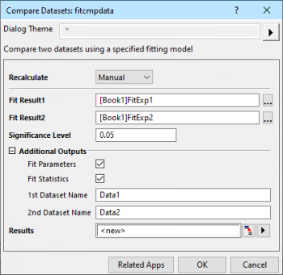
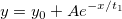

Datensätze vergleichen (nur OriginPro)
PostFit-CompareDataset-Dialog
Dieses Hilfsmittel wird verwendet, um zwei Anpassungsergebnisse aus der gleichen Anpassungsfunktion für zwei unterschiedliche Datensätze zu vergleichen. Der F-Test wird verwendet, um festzustellen, ob sich die beiden Datensätze signifikant voneinander unterscheiden.
Um dieses Hilfsmittel zu verwenden:
- Führen Sie eine Anpassung für zwei verschiedene Datensätze mit Hilfe der gleichen Anpassungsfunktion durch und erstellen Sie zwei Anpassungsberichte.
- Wählen Sie Analyse: Anpassen: Datensätze vergleichen im Origin-Menü.
-
- 
Dialogeinstellungen werden in den folgenden Abschnitten aufgelistet.
|
Hinweis: Beim gleichzeitigen Durchführen einer Anpassung auf mehrere Datensätze, stellen Sie bitte sicher, dass der Ergebnisbericht von jedem Datensatz in verschiedene Arbeitsblätter ausgegeben werden. Origin kann die Anpassungsergebnisse sonst nicht erkennen.
Dazu setzen Sie während der Anpassung Fitmodus für mehrere Datensätze auf Unabhängiger Fit - Getrennte Berichte. Im Fall einer nichtlinearen Kurvenanpassung gehen Sie zur Registerkarte Einstellungen des Dialogs NLFit, wählen Datenauswahl im linken Bedienfeld. Die Einstellung befindet sich im rechten Bedienfeld.
|
 |
Beispiel
Angenommen, wir haben 2 Datensätze und möchten sehen, ob sie sich für das gleiche Modell unterscheiden.
- 
Operation
- Importieren Sie Exponential Decay.dat aus dem Ordner \Samples\Curve Fitting.
- Markieren Sie Spalte B und wählen Sie Analyse: Anpassen: Nichtlinearer Fit im Menü aus, um den Dialog zu öffnen. Setzen Sie die Funktion auf ExpDec1. Klicken Sie auf OK, um das Ergebnisblatt zu erstellen.
- Markieren Sie die Spalte Col(C) und wählen Sie Analyse: Anpassen: Nichtlinearer Fit: 1<zuletzt verwendet>, um eine schnelle Anpassung von Col(C) mit dem gleichen Modell vorzunehmen.
- Wählen Sie Analyse: Anpassen: Datensätze vergleichen, um den Dialog zu öffnen.
- Klicken Sie auf die Schaltfläche Durchsuchen, um den Ergebnisbaum-Browser zu öffnen, und wählen Sie 1 Element für Fit Result1.
- Wiederholen Sie die gleiche Operation, um ein anderes Element für Fit Result2 auszuwählen.
- Wählen Sie Fit-Parameter und Fit-Statistik und klicken Sie auf OK.
- Aus der Tabelle F-Test können wir grob die Schlussfolgerung ziehen, dass die Spalten Col(B) und Col(C) sich unterscheiden, wenn sie mit dem Modell expDec1 angepasst werden.
|
Bedienelemente des Dialogs
Neu berechnen
Legen Sie fest, wie der Wert neu berechnet und aktualisiert wird, wenn sich die Eingangsdaten ändern.
Siehe:
- Analyseergebnisse neu berechnen
Anpassungsergebnis 1
Legen Sie das erste Anpassungsergebnis fest. Klicken Sie auf die Schaltfläche des Ergebnisbaum-Browser  rechts vom Feld Anpassungsergebnis 1. Alle Anpassungsberichte werden im Ergebnisbaum-Browser angezeigt. Sie können einen Anpassungsbericht als Anpassungsergebnis 1 im Dialog Ergebnisbaum-Browser wählen.
rechts vom Feld Anpassungsergebnis 1. Alle Anpassungsberichte werden im Ergebnisbaum-Browser angezeigt. Sie können einen Anpassungsbericht als Anpassungsergebnis 1 im Dialog Ergebnisbaum-Browser wählen.
Beachten Sie, dass Origin den Vergleich von Datensätzen für Anpassungsergebnisse mit Hilfe eines ODR-Algorithmus nicht unterstützt. Beispielsweise werden Anpassungsergebnisse, die die gleiche implizite Funktion verwenden, nicht unter Anpassungsergebnis 1 im Dialog Ergebnisbaum-Browser gezeigt.
Anpassungsergebnis 2
Legen Sie das zweite Anpassungsergebnis fest. Klicken Sie auf die Schaltfläche des Ergebnisbaum-Browsers rechts vom Feld Anpassungsergebnis 2. Nur Anpassungsberichte, deren Anpassungsfunktion der von Anpassungsergebnis 1 entspricht, werden im Ergebnisbaum-Browser angezeigt. Sie können einen Anpassungsbericht als Anpassungsergebnis 2 im Dialog Ergebnisbaum-Browser wählen.
Signifikanzniveau
Der Standardwert ist 0,05. Werte zwischen 0 und 1 werden unterstützt.
Zusätzliche Ausgaben
Legen Sie fest, ob die Anpassungstabellen ausgegeben werden sollen.
| Fit-Parameter |
Legen Sie fest, ob die Tabelle der Fit-Parameter für jeden Anpassungsdatensatz ausgegeben werden soll.
|
| Statistik zum Fit |
Legen Sie fest, ob die Tabelle der Fit-Statistik für jeden Anpassungsdatensatz ausgegeben werden soll.
|
| 1. Datensatzname |
Legen Sie einen Namen fest, der in der Ergebnistabelle für den ersten Datensatz relativ zum Anpassungsergebnis 1 angezeigt wird. Der Standardname ist Daten 1. |
| 2. Datensatzname |
Legen Sie einen Namen fest, der in der Ergebnistabelle für den zweiten relativ zum Anpassungsergebnis 2 angezeigt wird. Der Standardname ist Daten 2. |
Ergebnisse
Legen Sie das auszugebende Berichtsblatt für das Vergleichsergebnis fest.
Siehe: Ergebnisse ausgeben